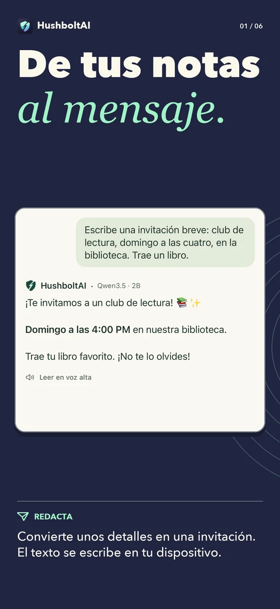

Herramientas de IA para iPhone y iPad
Escribe a tu manera, sin conexión.
Suaviza un correo o convierte tus notas en una lista. La IA funciona en tu dispositivo sin enviar el borrador a un servidor de IA.
10 respuestas nuevas gratis al día por dispositivo. Sin suscripción.

Tu primera conversación
¿Qué quieres escribir?
Elige una tarea. Puedes usar el ejemplo tal cual en HushboltAI o cambiar los detalles por los tuyos.
Cómo reformular un correo sin conexiónRedactar una invitación
Ver el ejemplo en iPhone: Redactar una invitaciónEscribe una invitación breve para nuestro club de lectura. Nos vemos el domingo a las tres en la biblioteca. Pide a cada persona que traiga un libro que le guste.
Recordar un plazo con tacto
Ver el ejemplo en iPhone: Recordar un plazo con tactoDale un tono más amable a este mensaje sin cambiar el plazo: «Necesito tus correcciones para el viernes».
Hacer una lista de tareas
Ver el ejemplo en iPhone: Hacer una lista de tareasHaz una lista para el pícnic con estas notas: comprar pan, guardar la manta y llenar las botellas de agua.
Antes de descargar
Lista para usar sin conexión
El tamaño que figura en el App Store es de unos 1,9 GB porque se incluyen los dos modelos de IA. Puedes descargar la app con wifi antes de viajar. No necesitas crear una cuenta ni descargar nada más para empezar a escribir.
Tus conversaciones
Los chats se guardan en el dispositivo, salvo que actives la sincronización con tu iCloud privado. En ambos casos las respuestas se generan en tu propio dispositivo.
Gratis o con un único pago
El cupo de 10 respuestas nuevas se renueva a medianoche, hora local. Reutilizar una respuesta guardada que coincida con tu petición no consume el cupo. Con un único pago, Plus desbloquea las respuestas ilimitadas de los modelos incluidos y la exportación a Markdown en esta edición.
Así es HushboltAI
Conversaciones y ajustes reales de la versión 1.1 en iPhone.


Escribe tu próximo borrador sin conexión.
Para iPhone con iOS 17 o posterior y iPad con iPadOS 17 o posterior.